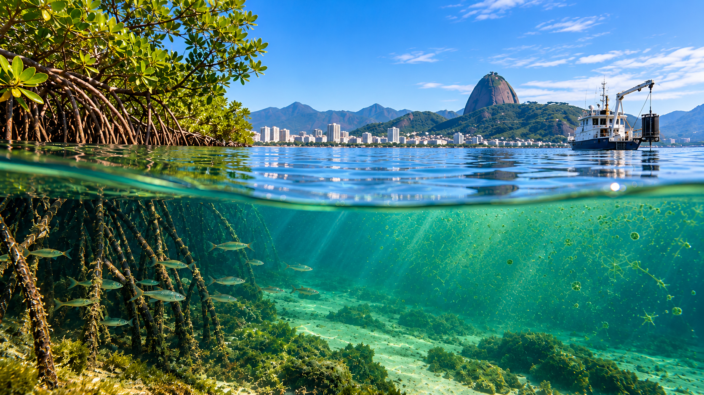

Creation and ambition
In January 2026, the French National Centre for Scientific Research (CNRS), the University of the State of Rio de Janeiro (UERJ) and the Federal Fluminense University (UFF) created a joint International Research Laboratory: the IRL MAREL (MARine Eutrophication Lab).
With one ambition: improve knowledge on all aspects of eutrophication processes in tropical coastal zones.
Marine eutrophication is defined as “an increase in the rate of supply of organic matter and nutrients to a marine ecosystem” (Nixon, 1995, Ophelia 41:199–219)”. In tropical regions, urbanization and domestic sources are the main reason of eutrophication which become a major threat on coastal ecosystems. Describing and understanding the ongoing changes in coastal zones allow us to predict their evolution at different spatial and temporal scales, and to prioritize future actions to optimize their effectiveness.
